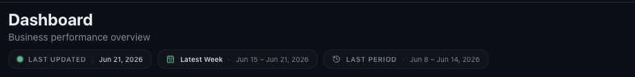
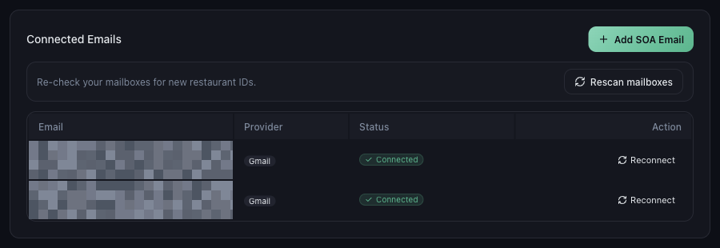
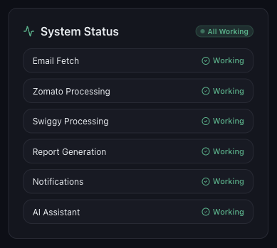

Mynt reads your numbers from the payout and settlement emails Zomato and Swiggy send to your connected inbox. Those emails do not arrive the moment an order is placed — platforms send them on their own payout cycle, often weekly. Mynt can only show a day once the email covering it has arrived.
So Mynt is not a live order tracker. It is an accurate picture of what the platforms have actually settled.
Every dashboard page carries three chips under the title. Read them before assuming data is missing.

| LAST UPDATED | The most recent day Mynt has data for. If this is three days old, no newer payout email has arrived. |
|---|---|
| Latest Week / Latest Month | The period currently on screen, with its exact dates. |
| LAST PERIOD | The earlier period every vs last period figure is measured against. |
Go to Settings → Email Integration. Every mailbox should show a green Connected badge. If one shows anything else, Mynt has stopped reading it and no new data can arrive from it.

Open Help & Support and look at the System Status card. Email Fetch and the platform processing rows should all read Working.

| The platform has not sent the email yet | Zomato and Swiggy send settlement mail on a payout cycle, often weekly. Today’s orders may not appear until the next cycle. |
|---|---|
| Mynt is still reading a new email | Give it a few minutes after a payout email lands, and a little longer right after you first connect a mailbox. |
| The date range excludes those days | Widen it to Latest Week or Latest Month. |
| A filter is hiding the outlet | Check the platform and outlet filters in the left panel. |
| The outlet is not mapped | An unmapped restaurant ID is skipped entirely. See the outlet mapping guide below. |
Or open Help & Support in Mynt and raise a ticket.